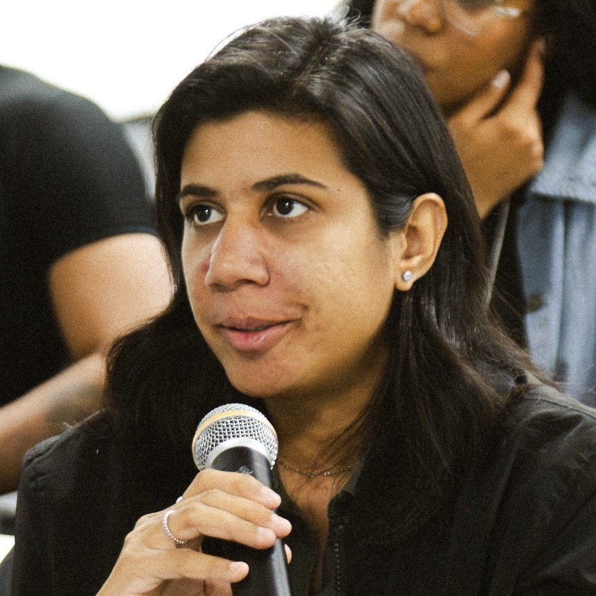

Você tem avaliações 5 estrelas no Google e um WhatsApp cheio de “quanto custa?”. Eu transformo isso num site que apresenta o seu trabalho e entrega o cliente já organizado no seu WhatsApp.
$ analisar "seu negócio" → avaliações no Google ✓ → o que os clientes elogiam ✓ → fotos do seu trabalho ✓ → site próprio ✗ não tem $ criar prévia → pronta para você ver ✓
Os números são de fontes públicas, e mostram por que estar bem apresentado na internet faz diferença.
casamentos registrados em Fortaleza em 2024. Cerca de mil por mês, e outubro a dezembro concentram quase um terço do ano.
Fonte: IBGE, Registro Civil (SIDRA 4412)dos casais buscam fornecedores e organizam o casamento com ajuda da internet e de aplicativos.
Fonte: Casamentos.com.br + ESADE (4.250 casais, dados de 2019)dos casais desistiram de um fornecedor porque ele demorou a responder.
Fonte: Casamentos.com.br + ESADE (dados de 2019)Cada site nasce do seu perfil: o que seus clientes elogiam, o tipo de evento que você mais faz, as suas fotos e o seu jeito de atender.
Em vez de “oi, quanto custa?”, o cliente responde 5 perguntas no seu site: data, local, número de convidados, tipo de serviço e investimento. Ele recebe um cronograma sugerido, e você recebe no WhatsApp uma mensagem organizada com tudo. O lead chega qualificado e você para de perder tempo com curioso.
Nota, número de avaliações e os melhores depoimentos do Google, organizados para convencer quem ainda não te conhece.
Cores, fontes e layout pensados para o seu posicionamento: clássico, praia, corporativo, jovem, romântico.
Quem chega pelo Instagram ou pelo Google está no celular. Botão de WhatsApp sempre à mão.
Título, descrição e textos pensados para quem procura o seu serviço em Fortaleza, com mapa e endereço.
Eu leio o seu perfil do Google: avaliações, fotos e o que os clientes destacam.
Você recebe o link de uma prévia do seu site, sem compromisso.
A gente acerta textos, fotos, serviços e informações com você.
Publicação no seu domínio, com o botão do WhatsApp funcionando.
Alguns estilos que já criei para cerimoniais em Fortaleza. Os nomes das empresas foram omitidos.
Para uma cerimonialista boutique: layout de revista, esmeralda e dourado.
Para quem atende casais de fora: destinos, planejamento à distância e plano B.
Para empresas de eventos: segmentos, cases e briefing de proposta.
Além de sites, eu desenvolvo ferramentas que resolvem problemas reais do dia a dia de pequenos negócios.
As conversas do Instagram chegavam pelo Manychat sem organização. Criei uma fila única: o atendente assume a conversa com um clique, a automação pausa para aquele contato e volta quando o atendimento termina.
Todo o dinheiro entrava numa conta só. O sistema separa, projeto por projeto, quanto de cada cliente ainda está em caixa, quanto falta de mão de obra e quanto está livre para novas saídas.
Site de pré-venda por fornadas, com retirada aos domingos. O cliente monta o pedido, paga por Pix e recebe o ticket. Quem chega depois de esgotar entra numa lista de espera.
Com quem trabalho


Com quem já trabalhei



Sou formada em Sistemas e Mídias Digitais pela Universidade Federal do Ceará e trabalho com marketing digital, sites e automações desde 2011, em Fortaleza.
Fui co-organizadora do WordCamp Fortaleza 2016 e dos meetups mensais de WordPress da cidade, e palestrei na Campus Party Brasil 2017, no Palco Design.
Gosto de projetos em que dá para conversar direto com quem faz o negócio acontecer, entender o problema e entregar algo que funciona no dia a dia.
Responda 5 perguntas, igual ao consultor que vai no seu site, e me mande pelo WhatsApp. Eu preparo uma prévia sem compromisso.
Cada projeto é diferente: depende do número de páginas, do que você já tem pronto e das funções que o site precisa. Você vê a prévia primeiro e recebe um orçamento pelo WhatsApp, sem compromisso.
Sim. Eu preparo uma prévia com base no seu perfil público do Google para você ver como o site poderia ficar. Você só segue se fizer sentido.
Não precisa ter antes. Se você ainda não tem, eu te ajudo a escolher e registrar.
O Instagram mostra o seu dia a dia. O site reúne de forma organizada o que o cliente precisa para decidir: serviços, avaliações, fotos e um caminho direto para te chamar. E aparece quando alguém procura o seu serviço no Google.
Não. Cerimoniais e eventos são o foco agora, mas atendo negócios locais em geral e também desenvolvo sistemas sob medida, como os do portfólio.
Me chama no WhatsApp e eu te mando uma prévia do seu site.
Chamar no WhatsApp